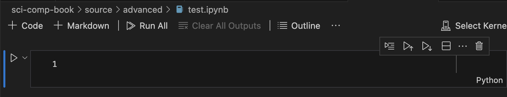

Appendix A.B Getting Started with Julia
This appendix shows how to get started with using Julia. The recommended way is first to install julia as described in Section A.B.1. Then follow the steps in Section A.B.2 to install Visual Studio Code, an open-source text editor. Some other methods include using a website
Repl.it to run julia in a webpage on a remote server, which the instructions are not up to date. Lastly, there are some older instructions to install and run jupyter which creates a local web server which you can run julia notebooks in any browser.
Section A.B.1 Downloading and Installing Julia
At the top of the main Julia website, click the green Download button, taking you to the downloads page. At the top of this page, you will get a single line to copy paste into Terminal (MacOS or Linux) or PowerShell in Windows. This will install both julia and a nice tool called
juliaup which is a program that can update julia. Note that all of the commands were run on a Mac (with a M1 chip) in August 2024. If you run these commands on a different platform at a different time, your results will vary a bit.
Running the MacOS version results in

continuing with the default installation, hit yes and hopefully you see:
Now installing Juliaup Installing Julia 1.10.5+0.aarch64.apple.darwin14 Configured the default Julia version to be 'release'. Julia was successfully installed on your system.
although the default version might be different. There may be instructions to ensure that your system path is set up correctly. Follow the details at the end of the installation process before continuing. Each environment may be a bit different and the install script should detect it correctly and give you the right answers.
juliaup, short for julia update is a script that helps you install and update julia. We can check what version of julia is running with juliaup status and after the install as above, we get:
Default Channel Version Update ----------------------------------------------------------- * release 1.10.5+0.aarch64.apple.darwin14
This shows all of the versions that are installed and the * shows that the release channel (official current version). Let’s add one more version to see how things work. Since 1.11 is about to come out, it is in release candidate (rc) stage. We can add this version with
juliaup add rc
and you should see that 1.11 is being downloaded. Once finished, checking the status with
juliaup status results in
Default Channel Version Update
---------------------------------------------------------------
rc 1.11.0-rc3+0.aarch64.apple.darwin14
* release 1.10.5+0.aarch64.apple.darwin14
and this shows that there is now a release candidate channel and the release channel is still default. Note that there is no update. If there was, you would see what version was available. There are many other versions and channels available. For example, you can specify a version. If you enter
juliaup add 1.11 and check the status then
Default Channel Version Update
---------------------------------------------------------------
1.11 1.11.0-rc3+0.aarch64.apple.darwin14
rc 1.11.0-rc3+0.aarch64.apple.darwin14
* release 1.10.5+0.aarch64.apple.darwin14
And noticed that both 1.11 and rc are both using the same version--this is common.
You can open the julia REPL (explain in detail below) by typing
julia on the command line of Terminal or PowerShell. You should see something like the following.

Note that the version that we are running is at the startup of the REPL. Quit this with CTRL-D. You should be returned to the prompt. Let’s say that we want to switch to the
rc channel. We do this with juliaup default rc. Rerun julia on the command line. You should see:

Try
2+2 and hit ENTER. You should see 4 and you’re off and running. If you played with the Repl.it website, you’ll notice that it is much more responsive. Although this is way to run julia, it generally isn’t the way most people use it.
Section A.B.2 Installing Visual Studio Code
A nice environment that is similar to jupyter is Visual Studio Code, often shortened to vscode. This is an open-source text editor/integrated development environment (IDE) that has capability of handling many different languages. The download and install is quite simple in that you should visit the VScode website, click the Download button and install the standard way for your platform. Opening the app, you should see something that looks like

and it wouldn’t hurt to go through the Learn the Fundamentals tutorial off the welcome page.
Since VSCode works with files on your local computer, it is fundamental to have a folder that VSCode works from. You should have or create a folder that is a project. If you don’t have one currently, use the Finder (MacOS) or Explorer (Windows) to create one inside your
Documents folder called My Project. Next, in VSCode, go to File, Add Folder to Workspace... and navigate to the folder you just made. You will be asked if you trust this folder.
Although you can use VSCode to access the REPL or write files written in Julia, it’s most powerful and flexible by running a notebook file. To do this there are two ways to start a file:
-
Open a new document (File, then New File...). Then save it somewhere ending with
.ipynbfor exampletest.ipynb. You should see a file that looks like
-
Another way to start a file is to click on the top left sidebar button that looks like two file icons. Create a new file inside the project by selecting the directory that you want it to go in. (If nothing is selected it will go in the top-level). Hover over the name of the project and click the icon that looks like a file with a +. It will make a new file which you should name like
test.ipynb.
Next, in the upper right corner, you should see "Select Kernel". In this case, select the Julia 1.11 kernel if you installed that. If not, select one that was installed.
In the cell, enter
2+2 or some simple calculation. If you get 4 below the cell with no errors, everything was installed correctly.
It is a good idea to also install the
IJulia package. You can do this within VSCode, by first revealing a terminal with View, the Terminal (also CTRL ` --backtick) will work or CMD-J on the Mac. You should see the bottom of the VSCode window split revealing a terminal. Within this type julia, then the following two lines:
using Pkg
Pkg.add("IJulia")
Section A.B.3 Running Julia code inside VSCode
MORE HERE.
Subsection A.B.3.1 Running a Julia REPL
The Julia REPL is where you enter single julia statements. A REPL is short for Read-Eval-Print-Loop and is often a interpretative shell where you can enter commands in some language. To get started, click on the REPL part of Atom and hit ENTER. This starts up julia and you should see:

Notice that it’s ready for you to enter something with the
julia> prompt.
We will enter a few commands to get started. All julia commands throughout the book will be written in a \verb|monospace font| and it is a good idea to type along at the same time.
Enter
a=2 at one prompt and b=3 at another prompt. You will see the response of 2 and 3 as well. (Additionally, you may notice that the Workspace tab in the upper right has changed. We will discuss that later.). Now enter a+b in a prompt and you should see the result 5.
Later in this chapter we do a simple plot, but need to load a package first. Type
] at a prompt and the julia prompt will turn into (@1.11) pkg> which is the package manager mode. First, type up to update all packages. You will need to authenticate first. Your default browser will automatically open and you will need to login. After you authenticate, the browser will say that it was successful and you can close that tab. Return to Atom and you should see that julia is updating some packages. This may take a minute or so.
Next, we will install the Plots package. At the
(@1.11) pkg> prompt, type add Plots. Julia will need to add a lot of other packages, but you won’t need to worry about this. We will use this in the next section. We will also learn much more about packages in [cross-reference to target(s) "ch-packages" missing or not unique].
To exit the package manager mode, enter CONTROL-C. You will leave this mode and return to julia prompt.
Section A.B.4 using the Repl.it website
To get started immediately with julia, we can use the http://repl.it website. Navigate to that in a browser and set yourself up with an account to get started. You will answer a number of questions including languages that you are interested in. At the end, you can click the big blue button in the top right corner
+ new repl to get a playground. Select \text{julia} for the language. You should get something that looks like:

The idea with the website is that you can have files (for julia files, they end in
.jl) which are listed on the left side. The middle is the current file being edited (and by default this is called main.jl) and then the REPL which has either output from the run file or by entering commands is on the right side.
Try entered
2+2 in the right side and hitting ENTER. You’ll see 4 and this means that everything seems to be working.
Subsection A.B.4.1 Limitations of Repl.it
Although
Repl.it is nice when starting out, there’s a number of limitations:
-
Since it is a website, you must have internet access.
-
Also, since it is a website, there is latency, that is it may appear that commands and actions don’t happen right away.
-
It doesn’t appear to use the latest version of julia (or probably any language). When you’re starting out, this isn’t that important, but you may be trying to find a feature that was newly released that isn’t on
Repl.it. -
Many of the advanced features of julia don’t work quite including the parallel processing and GPU features.
In short, if you are just starting in julia or trying it out, it’s a good way to start, but I would download your own version of it as soon as you can.
Section A.B.5 Downloading and running Jupyter
A Jupyter notebook is a way to run julia within a webpage interface and is quite easy, but powerful to use.
1
Jupyter stands for Julia, Python and R, three languages that run inside these notebooks, although there are plenty of others.
It’s not trivial to install, but once there are a couple of hurdles, it should be smooth. In short, you need to start with a python version on your machine.
Subsection A.B.5.1 Installing Jupyter on Mac
There are a few things that you’ll need to get a Jupyter browser: 1) a python interpreter and some packages and 2) the
IJulia package for julia.
Subsubsection Installing Python
Although python is currently available on MacOS, it is an old version. There are a number of ways to get python, but I will use
homebrew do to this.
-
Install Homebrew from \url{https://brew.sh}. Open the Terminal and then enter:
/bin/bash -c "$(curl -fsSL https://raw.githubusercontent.com/Homebrew/install/master/install.sh)"
-
Install python by entering in a terminal:
brew install python
There are a number of related packages needed as well, but after a few minutes you should have python installed. -
Install jupyter and jupyter lab:
pip3 install jupyterlab
Subsubsection Installing IJulia
IJulia is a julia package for interaction. It is installed like all other packages and details are in [cross-reference to target(s) "ch-packages" missing or not unique], however you can dousing Pkg
Pkg.add("IJulia")
Subsubsection Running Jupyter
Lastly, to run
jupyter, in a terminal, enter
jupyter lab
and that should automatically open your default browser and start Jupyter in the current directory. If all works well, you should see:

Section A.B.6 Using Jupyter
Jupyter looks and acts like a web app. There is a menu bar at the top, a tool bar on the left side, a sidebar on the left part of the page and the main screen (which starts with a launcher).
Section A.B.7 The kernel
In many ways, julia is a program like any other that you run on your computer, however because of the nature of it parsing statements and then giving output, you have to think about it a bit differently. When you start julia, we often will say that you are starting the kernel, which is a basic state which you can feed variables and statements to julia and get output. There are three different ways that this can occur:
Subsection A.B.7.1 The REPL
If you open julia directly from your computer (either clicking on an icon or using some sort of application launcher), you’ll set the REPL as explained above. This is a very simple, but often helpful, way to enter julia code. When this starts up you enter commands like:
a=2 b=3 a+b
This all goes to the julia kernel.
Section A.B.8 Restarting the Kernel
Julia doesn’t have a way of removing variables, functions or modules, whereas often we will need to do so. The best way is to restart the kernel, which basically means to shut down julia and restart. It depends on how this you run julia.
Subsection A.B.8.1 Restarting the Kernel in the julia REPL
This is probably the simplest. If you opened julia by launching the app by double-clicking an icon, just close the window and you stop the program. Note: you lose everything that you have done, which is another reason why I don’t use this often. Then restart by reopening julia.
If you started julia from a terminal or PowerShell, quit julia using CTRL-D. Then restart julia with the command
julia.
Subsection A.B.8.2 Restarting the Kernel in Jupyter
To restart the kernel in Jupyter, click the Kernel menu, then select Restart Kernel\ldots. To restart, just rerun a cell in Jupyter. Note: you’ll probably need to reload any packages in the notebook if you have any.
Subsection A.B.8.3 Restarting the Kernel in VSCode
To restart the kernel in VSCode click the Restart button at the top of the document. Unfortunately there is not indication that anything happens, but reevaluating a cell should indicate that it has been restarted. Note that the cells are numbers and should restart at 1.